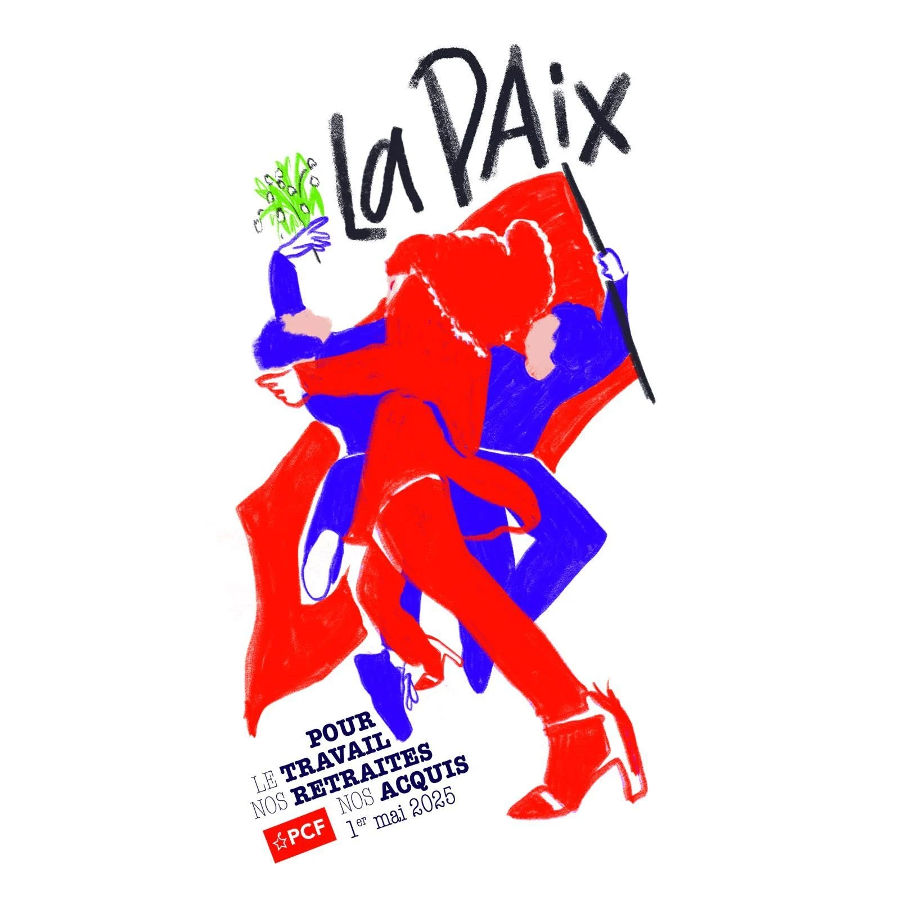

Publication relayée par le PCF 79
Le PCF place la paix, la liberté et l’égalité au cœur de son appel au 1er Mai
Date de mise à jour indiquée par Facebook · 30 avril 2025
Texte de la publication · PCF national
Un 1er mai pour la Paix, pour la Liberté, pour l’Egalité.
À l'heure de la grande saignée industrielle, de l'austérité généralisée, des escalades guerrières et des profits indécents, le 1er mai doit faire entendre la voix des travailleuses et des travailleurs.
Le 1er mai, nous marcherons ensemble :
Pour nos salaires, pour nos retraites, pour nos droits.
Pour la planète, pour la dignité, pour la paix.
Pour l'égalité femmes-hommes
Rejoignez-nous sous le drapeau rouge de la solidarité.
Un autre monde est possible : unissons-nous !
Partagez l’affiche, faites-la vivre partout : dans la rue, sur les murs, sur les écrans.
#1erMai #PCF #Solidarité #Travailleurs #Paix #UnissonsNous

Sources
PCF national · publication relayée par le PCF 79 · bibliothèque Facebook · AR-0002-FB-01135
À lire aussi · Patrick Le Hyaric revient sur la couverture médiatique du 1er Mai